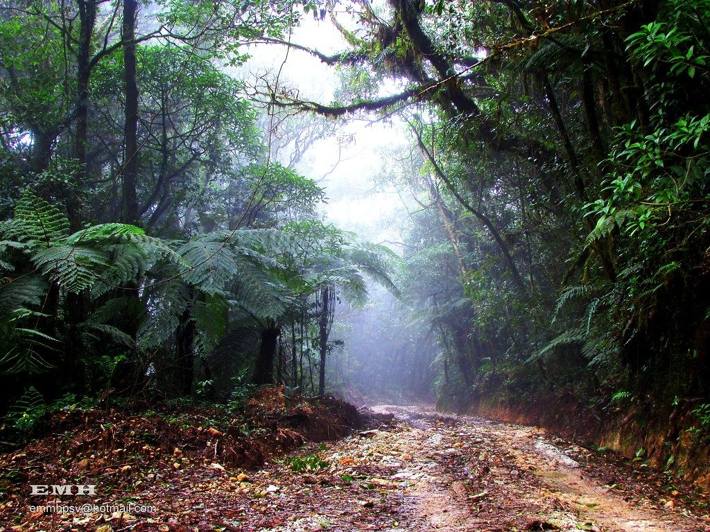
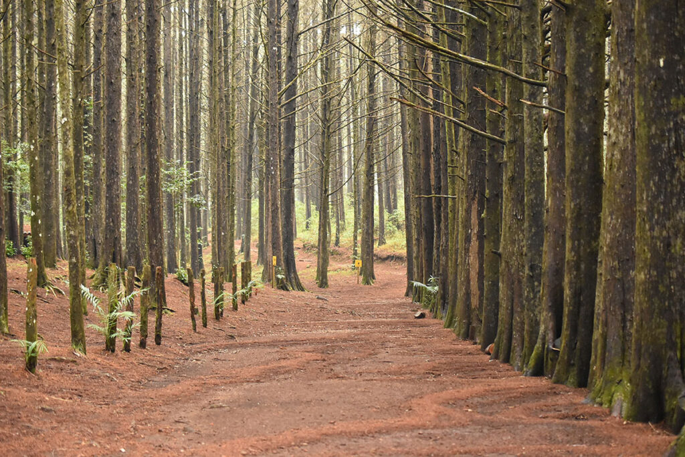
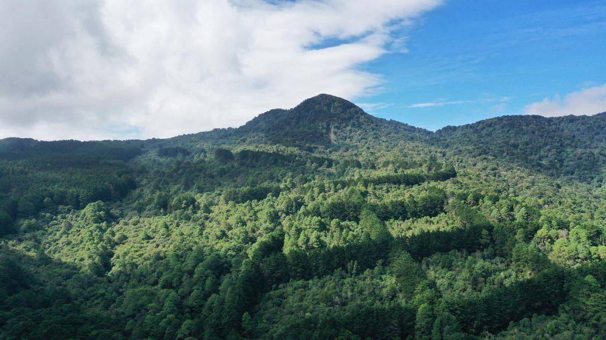

Historia
El Parque Nacional Montecristo, también conocido como "El Trifinio", es una reserva natural ubicada en la región norte de El Salvador.
Fue establecido para proteger los bosques nubosos y la biodiversidad que alberga, siendo hogar de numerosas especies de flora y fauna, algunas endémicas y en peligro de extinción.
Ubicación
Se encuentra en el departamento de Chalatenango, en la frontera con Honduras y Guatemala.
El parque es parte del área del Trifinio, donde convergen los tres países, y es accesible por carretera desde Chalatenango.
¿Por qué es famoso?
- Biodiversidad: Alberga bosques nubosos con especies únicas de flora y fauna. (El Salvador Travel)
- Trifinio: Punto donde convergen El Salvador, Honduras y Guatemala.
- Senderismo y naturaleza: Ideal para caminatas ecológicas y observación de aves.
Qué hacer en el Parque Nacional Montecristo
- Senderismo: Explorar los distintos senderos del parque y sus miradores.
- Observación de aves: Identificar especies endémicas y migratorias.
- Fotografía: Capturar los paisajes de bosques nubosos y panorámicas del Trifinio.
- Educación ambiental: Aprender sobre la conservación y biodiversidad local.
Cómo llegar
En vehículo privado:
- Desde San Salvador, toma la Carretera Panamericana hacia Chalatenango.
- Continúa por la carretera hacia Dulce Nombre de María y sigue las señales hacia Montecristo.
En transporte público:
- Toma un bus hacia Chalatenango y luego transporte local hacia el parque.
Galería



⬅ Volver a Lugares